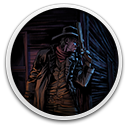

 Blood West
Details
 |
|
| Playtime | Not Played |
| Last Activity | Never |
| Added | 14/02/2025 18:09:14 |
| Modified | 18/05/2025 1:43:44 |
| Completion Status | Not Played |
| Library | Gog |
| Source | GOG |
| Platform | PC (Windows) |
| Release Date | 05/12/2023 |
| Community Score | 75 |
| Critic Score | 90 |
| User Score | |
| Genre | Role-playing (RPG) Shooter |
| Developer | Hyperstrange |
| Publisher | New Blood Interactive |
| Feature | Single Player |
| Links | Steam YouTube Discord Twitch GOG Epic |
| Tag | Action Dark First-Person FPS Horror Lovecraftian Resource Management Retro Shooter Stealth Survival Horror Western |
Description
Weird West legends meet eldritch horror in BLOOD WEST, an immersive stealth FPS. Become the Undead Gunslinger, doomed to roam the barren lands until he finds the means to purge their curse and free his soul. No, this isn’t your typical Wild West desperado redemption arc. This is a damnation arc.
The Canyons, the Swamp, and the Mountains. Each swarming with abominable monsters and unholy demons, these are open-ended worlds for you to explore freely at your own pace. It will take the player over 20 hours on average to complete all three scenarios, and over 35 if they want to see everything the barren lands have to offer.
Blood West is a stealth FPS inspired by the genre classics such as the Thief series (whose fans will be happy to hear the voice of Stephen Russell, the actor voicing the master-thief Garrett, returning here as the protagonist), S.T.A.L.K.E.R. games, or - from the contemporary catalog - Hunt: Showdown. The gameplay rewards the careful approach: scouting the area, stalking your enemies, and striking from the shadows. Can you figure out a way to clear a fort full of ghouls and monsters without raising an alarm?
The Barren Lands present the player with a nightmarish, twisted vision of the Wild West legends. The curse that has befallen the realm has corrupted every living thing, defiled the land itself, while summoning restless spirits and dark entities. In this mixture of gunslinger pulp and Lovecraftian horror, dark occult magick presents just as much of a threat as sudden lead poisoning.
In Blood West you will meet many colorful, yet strangely twisted, fully-voiced NPCs. Just as much prisoners of the Barren Lands as you are, they will sometimes share their unusual stories and send you on various missions. Play nice and they might reward you or become your allies. Cross them and risk their wrath.
The game won’t hold your hand. You’ll have to explore the land for yourself (buying a map from a vendor might prove useful!), and figure out your own way to approach quests. As you poke around the three expansive maps, keep an eye out for hidden places and secret stashes. There’s gold in the mountains! Fair warning - it’s probably cursed.
If sneaking around isn’t exactly your thing, or you feel that you have a power advantage over your enemies, you can always take the head-on approach and meet your enemies guns blazing. Blood West comes from the creators of the fan-favorite boomer shooter POSTAL: Brain Damaged, so much gratuitous fantasy violence and pixelated blood splatter is to be expected!
One man’s hell might be another hoarder’s paradise! From simple one-use items like bandages, through medical tinctures, explosives and incendiaries, straight to arcane artifacts that - once slotted - can change the way you play the game, the Barren Lands are just filled with STUFF. There are tons of useful items to discover, and there’s a special player’s stash crate for all those super-rare potions that you’ll hoard and never use.
A gunslinger without a gun would be just a regular slinger. Where’s the fun in that? Blood West makes sure you’ll have plenty of weapons to choose from. Revolvers, rifles, shotguns, carabines - a great variety of firearms, from standard army-issue to those infused with powerful magic, or straight-up possessed. And if you prefer not to cause a ruckus, there’s a wide selection of hand-to-hand combat weapons and archery weapons to pick your favorites from.
The RPG-like perk-based progression system in Blood West will allow you to highly customize the gameplay experience to your liking. Become a stealthy hunter, a revolver-fanning gunman or a relentless berserker. You will gain experience and progress through the skill tree, while discovering new artifacts in each of the scenarios that will bestow on you additional abilities. Combining skills and load-out creates more possible playstyles than you’d normally be able to explore in one playthrough.
The Canyons, the Swamp, and the Mountains. Each swarming with abominable monsters and unholy demons, these are open-ended worlds for you to explore freely at your own pace. It will take the player over 20 hours on average to complete all three scenarios, and over 35 if they want to see everything the barren lands have to offer.
Blood West is a stealth FPS inspired by the genre classics such as the Thief series (whose fans will be happy to hear the voice of Stephen Russell, the actor voicing the master-thief Garrett, returning here as the protagonist), S.T.A.L.K.E.R. games, or - from the contemporary catalog - Hunt: Showdown. The gameplay rewards the careful approach: scouting the area, stalking your enemies, and striking from the shadows. Can you figure out a way to clear a fort full of ghouls and monsters without raising an alarm?
The Barren Lands present the player with a nightmarish, twisted vision of the Wild West legends. The curse that has befallen the realm has corrupted every living thing, defiled the land itself, while summoning restless spirits and dark entities. In this mixture of gunslinger pulp and Lovecraftian horror, dark occult magick presents just as much of a threat as sudden lead poisoning.
In Blood West you will meet many colorful, yet strangely twisted, fully-voiced NPCs. Just as much prisoners of the Barren Lands as you are, they will sometimes share their unusual stories and send you on various missions. Play nice and they might reward you or become your allies. Cross them and risk their wrath.
The game won’t hold your hand. You’ll have to explore the land for yourself (buying a map from a vendor might prove useful!), and figure out your own way to approach quests. As you poke around the three expansive maps, keep an eye out for hidden places and secret stashes. There’s gold in the mountains! Fair warning - it’s probably cursed.
If sneaking around isn’t exactly your thing, or you feel that you have a power advantage over your enemies, you can always take the head-on approach and meet your enemies guns blazing. Blood West comes from the creators of the fan-favorite boomer shooter POSTAL: Brain Damaged, so much gratuitous fantasy violence and pixelated blood splatter is to be expected!
One man’s hell might be another hoarder’s paradise! From simple one-use items like bandages, through medical tinctures, explosives and incendiaries, straight to arcane artifacts that - once slotted - can change the way you play the game, the Barren Lands are just filled with STUFF. There are tons of useful items to discover, and there’s a special player’s stash crate for all those super-rare potions that you’ll hoard and never use.
A gunslinger without a gun would be just a regular slinger. Where’s the fun in that? Blood West makes sure you’ll have plenty of weapons to choose from. Revolvers, rifles, shotguns, carabines - a great variety of firearms, from standard army-issue to those infused with powerful magic, or straight-up possessed. And if you prefer not to cause a ruckus, there’s a wide selection of hand-to-hand combat weapons and archery weapons to pick your favorites from.
The RPG-like perk-based progression system in Blood West will allow you to highly customize the gameplay experience to your liking. Become a stealthy hunter, a revolver-fanning gunman or a relentless berserker. You will gain experience and progress through the skill tree, while discovering new artifacts in each of the scenarios that will bestow on you additional abilities. Combining skills and load-out creates more possible playstyles than you’d normally be able to explore in one playthrough.